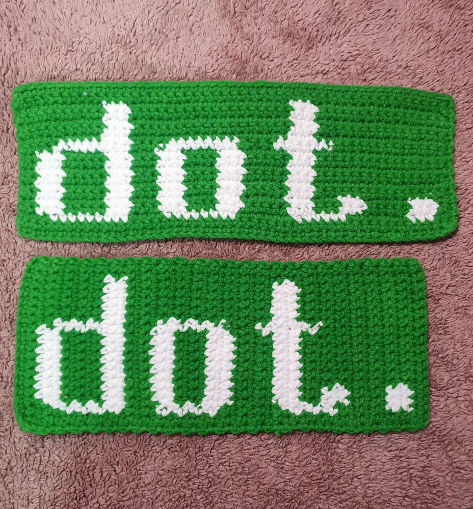
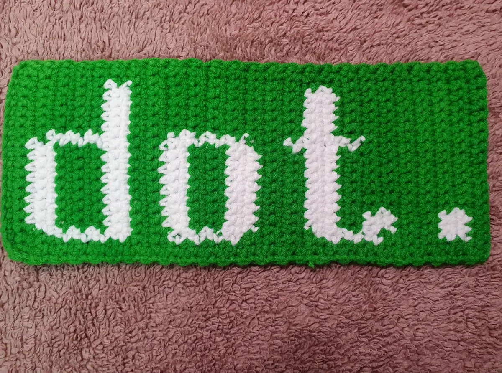
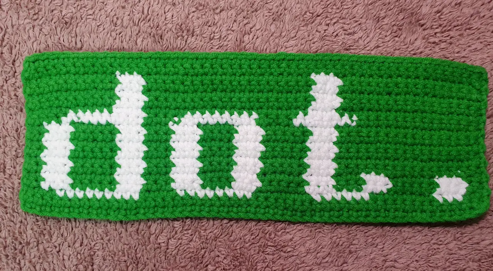

가이드 › 뜨는 방향에 따라 달라지는 모양
같은 도안, 뜨는 방향에 따라 달라지는 모양
같은 도안을 가로 시작과 세로 시작으로 한 번씩 떠 보았습니다. 도안은 이 사이트 메인에 쓰던 "dot." 도안이며, 50코 × 19단입니다. 초록색은 아이러브얀, 흰색은 착한면 실을 사용했고, 6호 코바늘로 작업했습니다.

태피스트리 크로셰는 도안이 같아도 어느 방향으로 뜨느냐에 따라 편물의 성격이 꽤 달라집니다. 두 작품을 나란히 놓으면 차이가 한눈에 보입니다.

세로 시작이 더 편했습니다
편물이 길게 이어지는 가로 시작은 뜨는 동안 아래로 늘어나는 느낌이 있었습니다. 세로 시작은 편물이 늘어나지 않아 모양이 안정적이었고, 뜨기도 더 편했습니다.

문구 모양은 가로 시작이 더 예뻤습니다
"dot."처럼 알파벳이 한 줄로 이어지는 문구는 가로 시작이 글자 모양이 더 예뻤습니다. 문구가 두 줄이라면 방향에 따른 차이가 크지 않으므로, 덜 늘어나는 세로 시작이 편합니다.

정리
- 한 줄 문구: 모양을 우선하면 가로 시작, 편한 쪽은 세로 시작입니다.
- 두 줄 이상: 세로 시작이 편하고 모양도 비슷합니다.
- 방향을 바꾸고 싶다면 도안 만들기 화면의 더보기 메뉴에서 90° 또는 270° 회전을 쓰면 됩니다. 돌리고 나면 코와 단 수가 바뀌므로, 뜨기 전에 확인하시기 바랍니다.